Who signs in, which pages to show, what to click and what to say — one connected story that touches every function, from an employee's request to the CEO's approval and the administrator's audit trail.
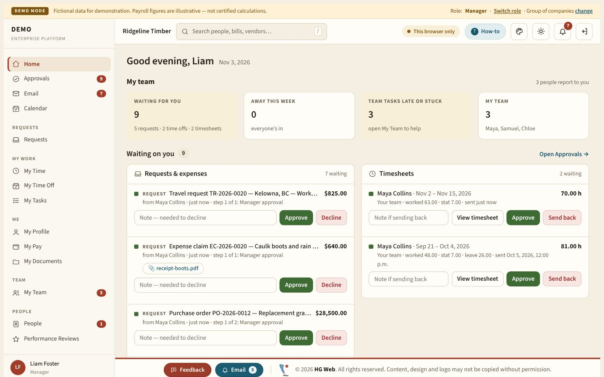
Sign in as these people in this order. Each act picks up what the previous one created, so the same requests travel all the way through the group.
| Sign in as | How | What they show | Time | |
|---|---|---|---|---|
| 1 | Maya CollinsEmployee · Equipment Operator, Harvest Operations, Ridgeline Timber | Employee button | Raises everything: hours, time off, a $28,500 purchase order, an expense, a trip, a certificate renewal | 10 min |
| 2 | Liam FosterManager · Field Supervisor, Ridgeline Timber (Maya's manager) | Manager button | Approves the team's work, completes a review, assigns a task, uploads a contract | 8 min |
| 3 | Priya RamanHR Manager · Alderbrook Holdings, all companies | HR Manager button | Hires, onboards, opens a job, runs reviews and benefits, ends an employment | 10 min |
| 4 | Daniel OkaforFinance Manager · Chief Financial Officer, also runs payroll | Finance Manager button | Finance team approvals, the finance queue, bills, payments, banking, books, stock, payroll, ROE | 15 min |
| 5 | Olivia BennettCEO · Chief Executive Officer (executive role) | Who are you? → name → OK | Director-level approvals on larger amounts, payroll and hiring; the whole-group view | 6 min |
| 6 | Daniel · Ethan Clarke · MayaClosing the loop (Ethan: General Manager, Ridgeline Timber) | Finance Manager button · name list · Employee button | Post payroll, see the purchase order sent, receive the goods, the employee sees the results | 7 min |
| 7 | System AdministratorAdministrator · all companies | Administrator button | Users and roles, approval rules, audit log, feedback, Page & Experience Manager | 8 min |
Each row is one request or story, followed across the acts. Use it to tell the audience where something is going next.
| Story | Employee | Manager | HR / Finance | CEO | Closing | Acts |
|---|---|---|---|---|---|---|
| Timesheet → pay | Maya sends hours | Liam approves | Daniel runs pay run PR-2026-0006 | Olivia approves the payroll | Daniel posts; Maya sees the Oct 9 statement | 1·2·4·5·6 |
| Time off, Nov 23–25 | Maya asks (21 h) | Liam approves | Priya sees the new balance | Maya sees it approved | 1·2·3·6 | |
| Purchase order $28,500 (PO-2026-0012) | Maya asks | Liam: step 1 of 2 | Olivia: director level (over $5,000) | Sent to the supplier; Ethan receives it | 1·2·5·6 | |
| Expense $640 (EC-2026-0020) | Maya claims, with the receipt | Liam approves (under $5,000) | Daniel records it as paid | 1·2·4 | ||
| Bill INV-10245 (finance team) | Daniel approves as the team's manager | Posts to the ledger | 4 | |||
| Travel $825 (TR-2026-0020) | Maya asks | Liam approves (under $5,000) | Daniel books it and attaches the confirmation | 1·2·4 | ||
| Contract CT-2026-0006 | Liam uploads it for Harvest Operations | Priya can't see it (other team) | Olivia sees every contract | In the admin's audit log | 2·3·5·7 | |
| Job opening: Log Loader Operator | Priya opens it | Olivia approves as hiring manager | 3·5 | |||
| End of season: Emma Lawson | Priya ends the employment; Daniel issues the Record of Employment | 3·4 | ||||
| Review and certificates | Maya renews her First Aid ticket | Liam completes Maya's review | Priya starts the Q4 cycle, sends a renewal reminder | 1·2·3 | ||
| Feedback | Maya sends a note | Administrator marks it done | 1·7 |
| Request | Who approves |
|---|---|
| Time off | Manager |
| Expense claims, travel requests and claims, credit-card purchases, purchase requests and orders | Manager, then the Director above $5,000 |
| Vendor bills | The requester's manager (the Finance Manager for finance-team bills), then the Director from $25,000 |
| Payroll runs | Director |
| Job openings | The chosen hiring manager |
| New projects | Director |
Director level is anyone with the executive role: the Executive Director (Grace Holloway) or the CEO (Olivia Bennett).
Start with the person closest to the work. Everything Maya raises in this act comes back later as an approval for someone else.
| # | Go to | Do | Say |
|---|---|---|---|
| 1 | First page · sign-in page | Choose Group of companies. Then, before clicking anything, point out the four companies, the Who are you? list (20 people, numbered in the presentation order) and the demo-role buttons. There is no password: pick a name and press OK. | One platform for Alderbrook Holdings and the three operating companies. Everyone signs in once and sees only what their role allows. |
| 2 | Home | Show My summary (timesheet hours, vacation left, latest pay, my requests), Needs your attention, Recent activity and Coming up. | An employee's day starts here — everything waiting for them, one click away. |
| 3 | My work › My Time | Pay period Nov 2 – Nov 15: type 7 h on each weekday. Note that Nov 11 (Remembrance Day) is already filled in. Click Send for approval. | Stat holidays and approved time off fill themselves in; overtime is applied by the rules, not typed by the employee. |
| 4 | My work › My Time Off | Request time off: Annual Vacation Entitlement, Nov 23 → Nov 25 (21 h calculates), description “Family visit”. The button reads Send to Liam. Open the Calendar tab. | The button names the approver — the reporting line is built in. |
| 5 | Requests › New Purchase Order | Supplier: a new supplier, “Coastal Heavy Equipment” · estimated amount 28500 · expense code 5215 Field Equipment · what “Replacement grapple for the log loader” · notes “Current grapple cracked at Site 14; the loader is down without it.” Click Submit request (PO-2026-0012). | Over $5,000, so it goes to Liam first, then to director level. |
| 6 | Requests › New Expense Claim | “Caulk boots and rain gear for Site 14” · Nov 2 · Caulk boots and rain gear · 5205 Operating Supplies · 640 · attach the receipt → Submit request (EC-2026-0020). | Under $5,000, so Liam's approval is the only one. Finance then pays it back. |
| 7 | Requests › New Travel Request | Kelowna, BC · WorkSafeBC faller refresher course · Dec 1–3 · Vehicle only · hotel booked by Finance · training Yes · estimated cost 825 → Submit request (TR-2026-0020). | Under $5,000, so only her manager needs to say yes. |
| 8 | My work › My Tasks | Set the Block 12 safety walk to 75% and add a note. | Managers see progress without asking. |
| 9 | My Profile › Certificates | Occupational First Aid Level 1 expires Nov 10: Renew… · certificate number OFA1-2026-4471 · attach any PDF → Save renewal. Then show Overview, Employment, Pension & Benefits and Reviews. | HR is reminded before tickets expire — no spreadsheet. |
| 10 | My Pay · My Documents | Show pay statements (download one), tax slips and company policies. | |
| 11 | Directory · Search · Look · Feedback | People › Directory and Org chart. Press / and search “Liam”. Try the palette (five looks) and dark mode. Feedback at the bottom: “Could My Time remember my usual department?” → Send. | Feedback lands with the administrators with the page attached — we'll see it in Act 7. |
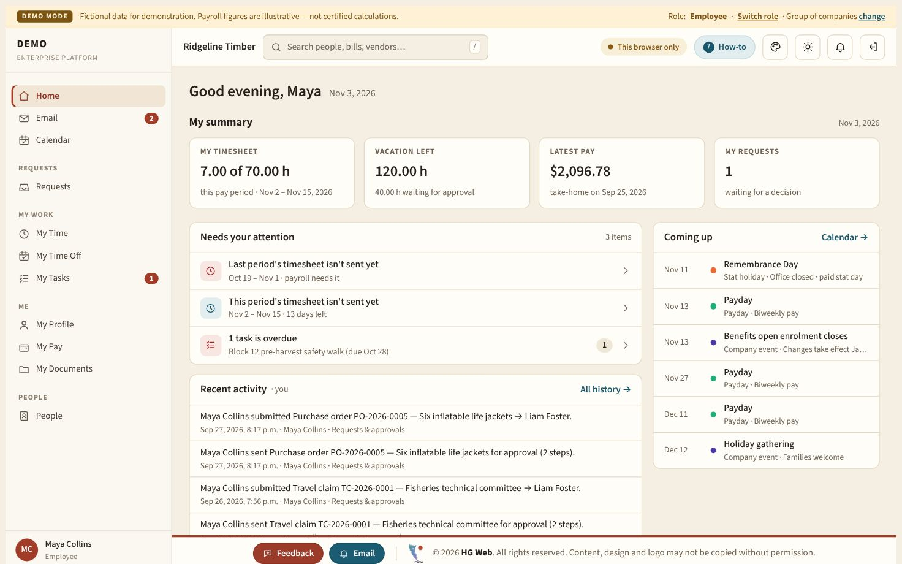
Maya's Home: summary, things that need her, what's coming up.
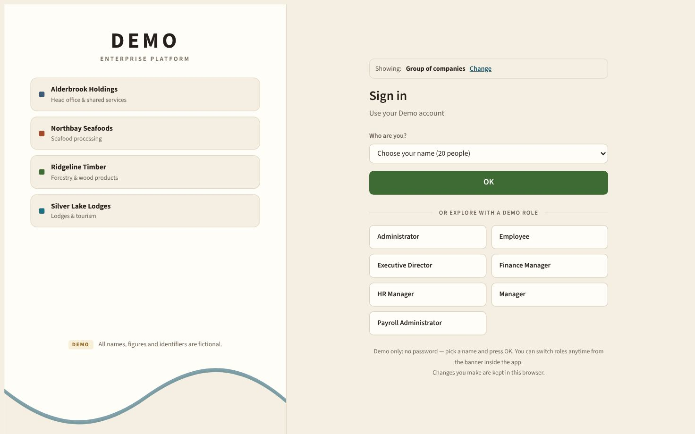
The sign-in page: companies, names, demo roles.
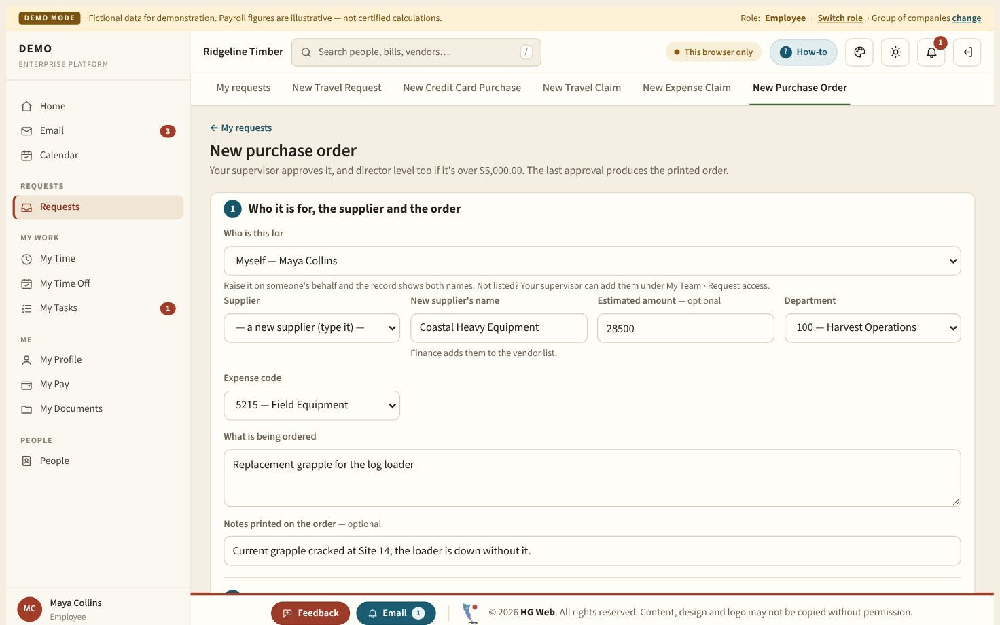
The $28,500 purchase order request.
Everything Maya sent is now waiting for Liam — on Home, in Approvals, and as counts in the menu.
| # | Go to | Do | Say |
|---|---|---|---|
| 1 | Home | My team tiles: Waiting for you 9 (5 requests · 2 time offs · 2 timesheets), Away this week, Team tasks late or stuck. Approve or decline right from Waiting on you. | A manager can clear the queue without leaving Home. |
| 2 | Approvals › Timesheets | On Maya's Sep 21 – Oct 4 sheet click View full timesheet (day by day, overtime, stat, leave) → Approve. Approve the current period too. | Approved hours flow straight into the next payroll run. |
| 3 | Approvals › Purchases & bills | Open the PO-2026-0012 card: who, what, why, and the two steps with their thresholds → Approve. | It now waits for director level. Nobody can approve their own request, and Finance does not approve other teams' requests. |
| 4 | Approvals › the rest | Approve Maya's expense claim and travel request (both go straight on to Finance — under $5,000) and both time-off requests. | |
| 5 | People › Performance Reviews | Maya Collins → write a manager summary, pick a rating → Complete review. | |
| 6 | Team › My Team | Show Board, List and Timeline. + New task: “Grease the loader before the grapple swap”, assign Maya, due Nov 13. Then the Timesheets, Time off, Requests and Expense claims tabs. | |
| 7 | NewOperations › Documents › Contracts | Upload a contract: “Grapple repair and service — 2026/27” · with Coastal Heavy Equipment · team Harvest Operations — Ridgeline Timber · amount 12500 (optional) · Nov 15 2026 → Nov 14 2027 · reference CHE-SVC-2026 · attach the PDF → Upload contract (CT-2026-0006). On the contract page show Who can open this contract and History. | No share lists: the team and the reporting line decide who sees a contract. Every upload, edit and file is recorded with who and when. |
| 8 | Reports › History | History → My team: Maya's requests and Liam's decisions, with PO-2026-0012 now waiting at director level. |
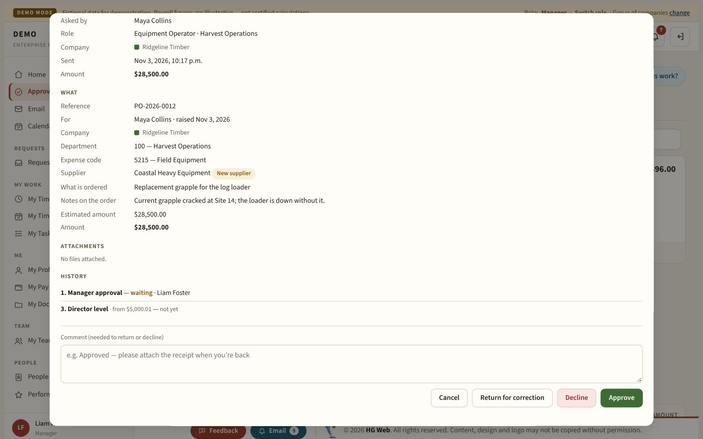
The purchase order with its approval steps.
Liam's Home: nine things waiting.
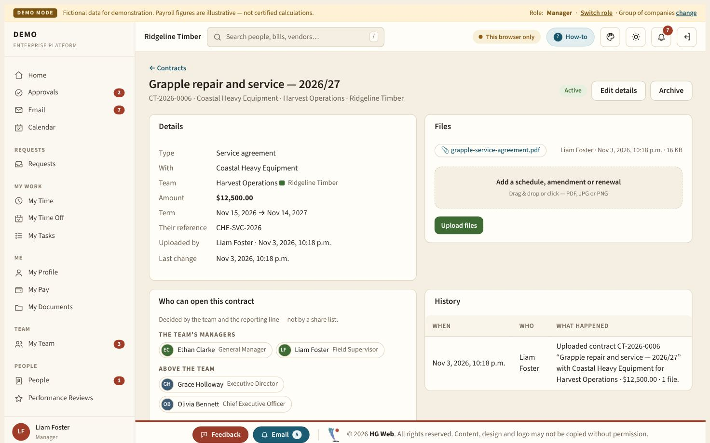
A contract: details, files, who can open it, history.
HR sees the result of Liam's approvals on people's records, then runs the people side of the group.
| # | Go to | Do | Say |
|---|---|---|---|
| 1 | Home | At a glance (people, starting soon, time off and timesheets waiting); Needs your attention (hiring requests for HR, an expired certificate, benefit requests). | |
| 2 | People › Employees › Maya Collins | Tabs: Overview (job, reporting line), Pay & benefits (pay change), Time & time off (balance now includes the approved vacation), Certificates (the renewed First Aid ticket with its file), History. | One record — HR's side of what Maya saw in her profile. |
| 3 | People › Employees › Add employee | Nora Bishop · Ridgeline Timber · Harvest Operations · Equipment Operator · reports to Liam Foster · start Nov 16 · $32.50/h → Add employee. Then the Onboarding tab: tick a task. | Onboarding tasks are created automatically. |
| 4 | People › Hiring › New opening | Log Loader Operator · Ridgeline Timber · Harvest Operations · hiring manager Olivia Bennett · 1 opening · $62,000–$70,000 · start Dec 14 · Prince George → Send for approval. The Hiring requests tab holds what managers have asked HR to hire. | An opening goes to the hiring manager before it is posted — we'll approve it as the CEO. |
| 5 | People › Directory · Org chart | Optional: drag a person onto another department to move them. | |
| 6 | Time & Attendance | Timesheets (Liam's approvals), By pay period (Remind people who haven't sent), Time off (Requests, Balances). | |
| 7 | Reviews, Benefits & Pension · Certificates | Performance Reviews: start a review cycle “Q4 2026 check-in”, due Dec 15, Ridgeline Timber. People › Certificates: the expired Pesticide Applicator ticket (Samuel Fischer) → Send reminder. Benefits: enrol Maya in Vision Care, Family, from Dec 1 → Save. | |
| 8 | People › Employees › Emma Lawson | Overview tab → End employment card: last day Oct 30, reason “Shortage of work / end of contract or season” → End employment & draft ROE. | Sign-in off, benefits ended, the Record of Employment drafted for Payroll. |
| 9 | Documents › Contracts | Priya sees only her own team's contract (the external audit engagement). | Ridgeline Timber's contracts stay with Ridgeline Timber's reporting line. |
| 10 | Reports | Time off report and Headcount. |
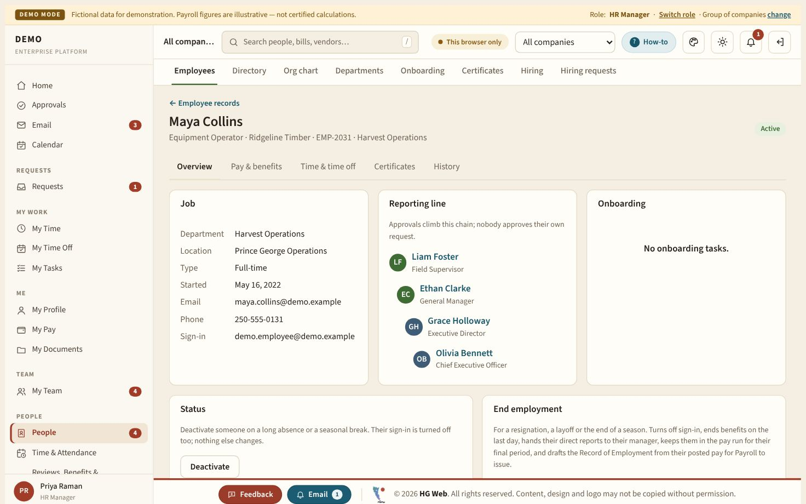
Maya's employee record, HR's view.
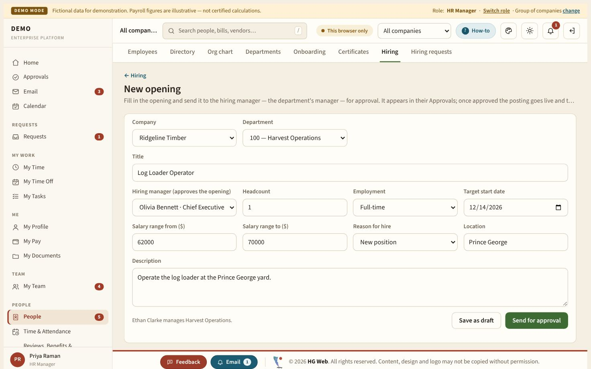
A new opening routed to the CEO.
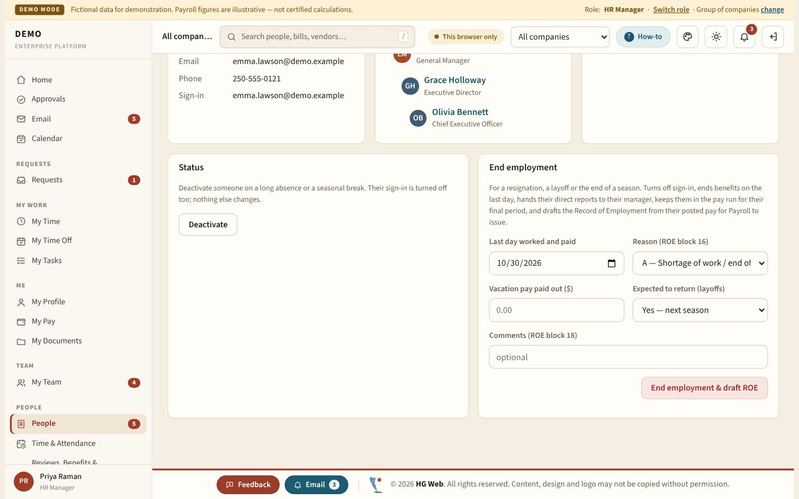
End employment — drafts the ROE.
Approves his own finance team's requests, then the money: the finance queue, payables, receivables, bank, books, stock and payroll.
| # | Go to | Do | Say |
|---|---|---|---|
| 1 | Home | At a glance: cash on hand, bills we owe, owed to us, last payroll; open bills by status. | |
| 2 | Approvals | Bill INV-10245 from Coast Marine Supply, $8,912.44. Sofia Marquez in the finance team entered it, so it comes to Daniel as their manager, next to three small requests from his team. Open its PDF first, then Approve. | The Finance Manager approves only the finance team's own requests; every other team's goes to their manager, then the Director. An approved bill posts to the ledger by itself. |
| 3 | Requests › Finance queue | Maya's EC-2026-0020 → paid through Direct deposit → Record as paid. Her trip TR-2026-0020 → cost before tax 740 (GST and PST fill in) · attach the confirmation → Mark processed and send the confirmation. | Approved requests wait here for Finance: claims are paid, trips are booked, and each one posts to the ledger. |
| 4 | Accounts Payable › Bills | New bill (or drop a vendor PDF on the page), Batch entry, Payment batch: tick approved bills → Post payment batch. Then Vendors and Files. | One payment run, one ledger entry. |
| 5 | Purchasing › Matching | 3-way match: IDC-88812 matches; SS-30417 shows a variance (billed 24 saw chains, 18 received) → Accept variance with a reason, or wait for delivery. | Bills are checked against the order and what actually arrived. |
| 6 | Accounts Receivable | New invoice (a customer, $18,400 of cedar logs), then Record payment or a Deposit batch. | |
| 7 | Banking | Ridgeline Timber tab → Load sample statement → Auto-match → Post as new entry for bank fees. Show Matching rules. | |
| 8 | Accounting | Journal entries → New manual entry (must balance, open period only); Recurring → Run all due; Fixed assets → Run depreciation; Budgets; Month-end → Close period; Chart of accounts; Inter-company. | |
| 9 | Sales & Stock · Projects | Stock reorder alerts → Create purchase order; Stock count; Sales orders; Shipments. Projects: budget against actual. | |
| 10 | Payroll › Pay runs | Start a pay run: Ridgeline Timber — Ridgeline Hourly Crews · period Sep 21 – Oct 4 · pay day Oct 9 → Open pay run → Calculate → Send for approval. (PR-2026-0006: Maya, $2,567.50 gross.) | CPP, EI and tax are calculated; the executive approves before anything posts. |
| 11 | Payroll › Records of Employment · CRA remittances | Emma Lawson → Open → Issue ROE → Download. CRA remittances → Generate PD7A. | |
| 12 | Reports | Profit & Loss, Balance sheet, Trial balance; every purchase order is under Finance › PO. Every list has Download ▾ for Excel, PDF and CSV. |
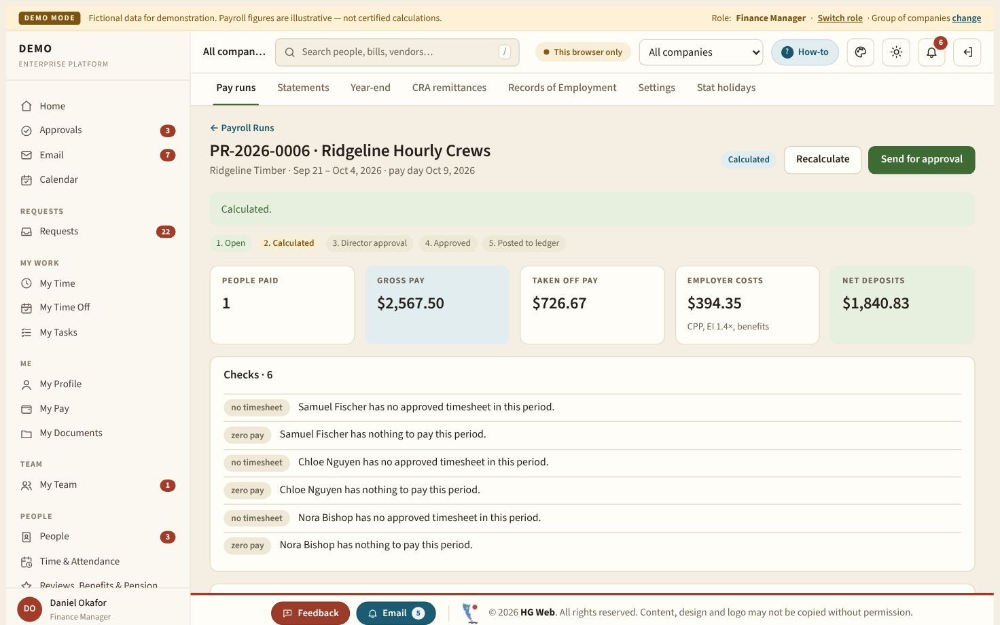
Pay run calculated, ready to send to the executive.
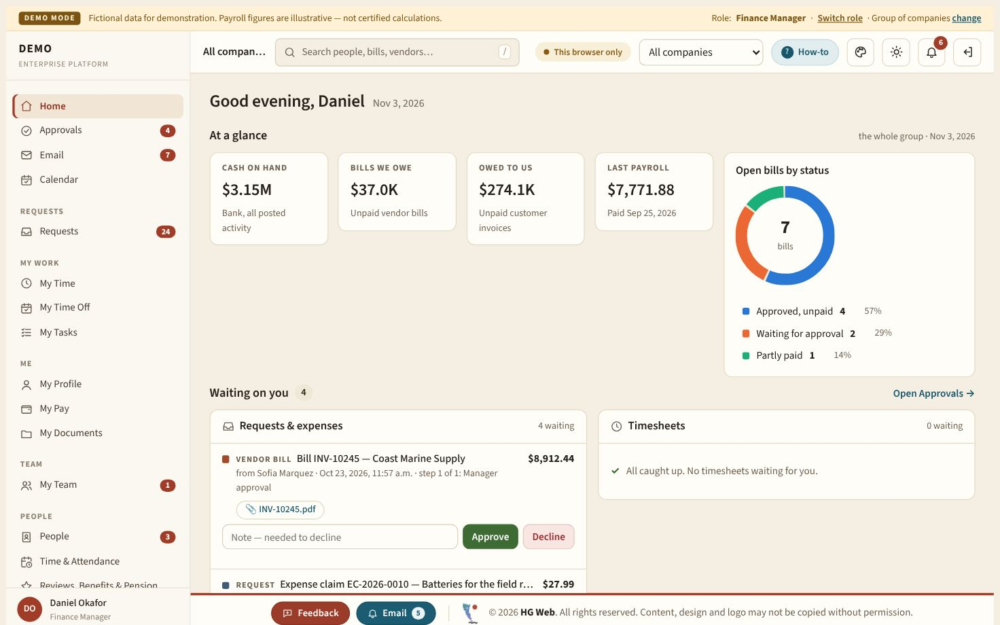
Daniel's Home: money at a glance and his approvals.
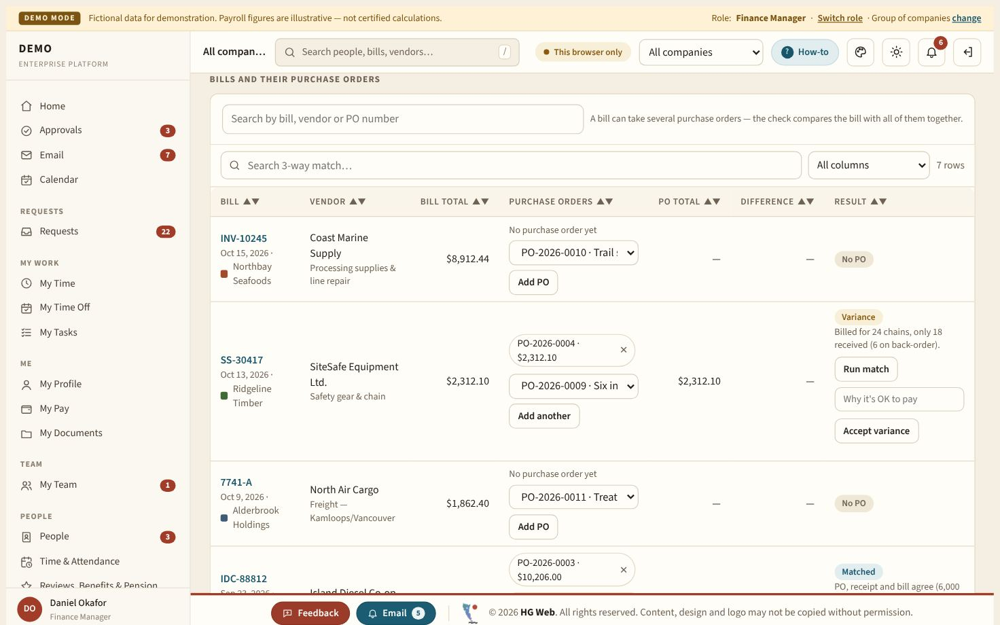
3-way match workbench.
The top of every ladder: the last approvals on large amounts, payroll and hiring, and the whole-group picture.
| # | Go to | Do | Say |
|---|---|---|---|
| 1 | Home | At a glance: cash on hand, people, bills we owe, owed to us; people by company. | |
| 2 | Approvals | Payroll PR-2026-0006 → Approve. Purchase order PO-2026-0012, director level — it shows Liam's approval → Approve (the order is numbered and sent to the supplier). Job opening Log Loader Operator → Approve (now open for applicants). The other items are older demo requests. | Three different workflows, one inbox, each with its full trail. |
| 3 | Documents › Contracts | All six contracts across the four companies. | The CEO is above every team, so she sees every contract. |
| 4 | Reports · History | Profit & Loss, Balance sheet, Headcount; History → Everything I can see; switch the company in the top bar. |
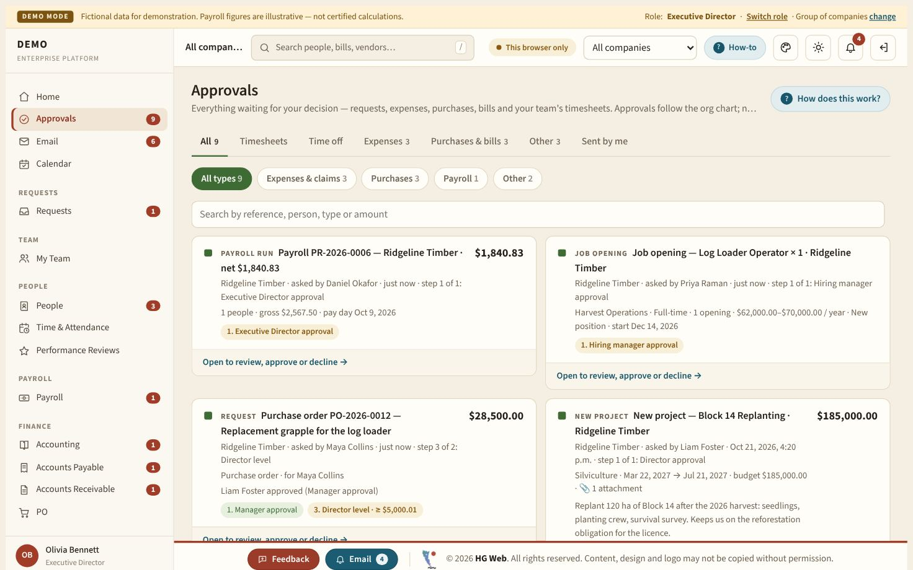
The CEO's approvals: payroll, the job opening and the $28,500 purchase order (director level).
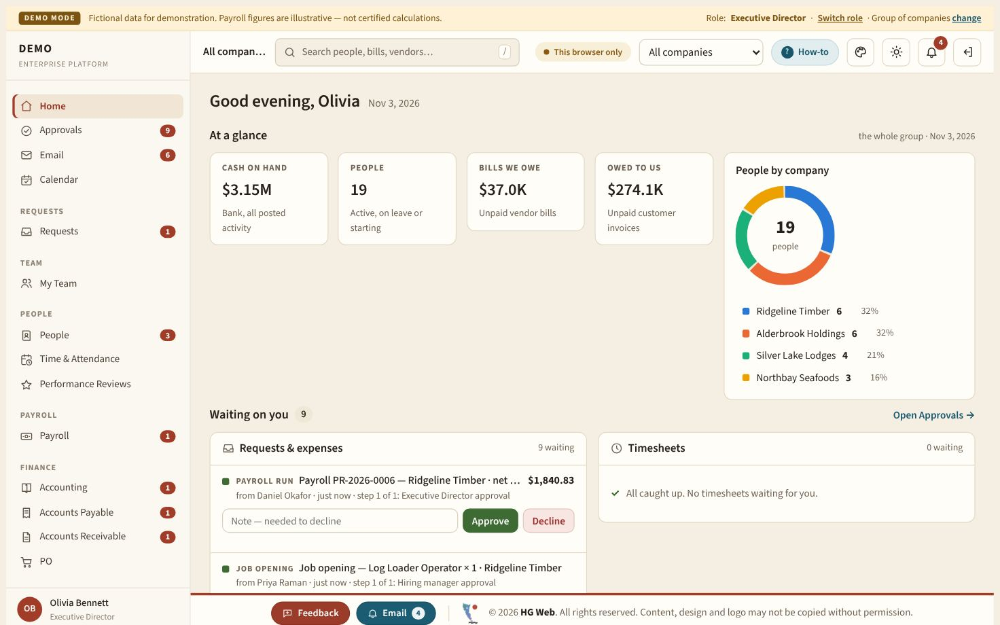
At a glance.
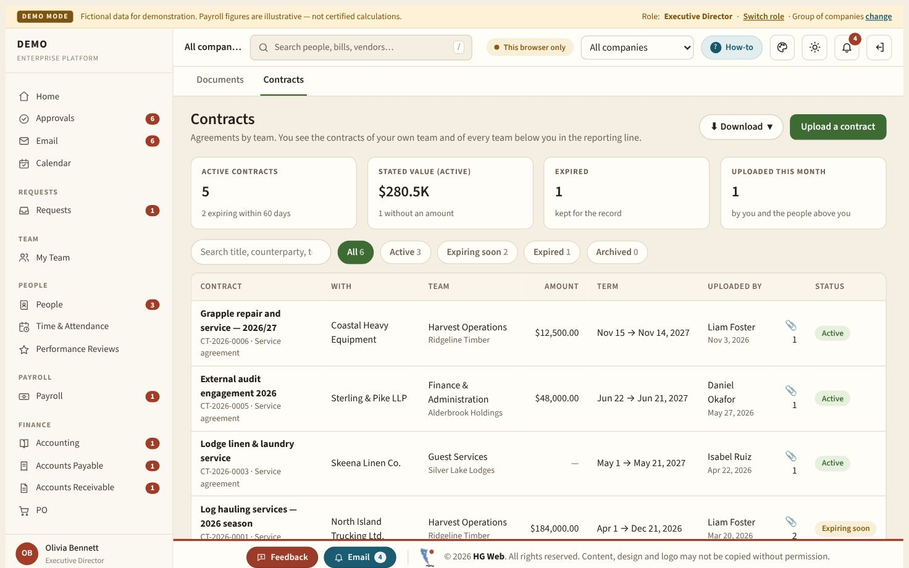
Every team's contracts.
Show that every request from Act 1 reached its end.
| # | Go to | Do | Say |
|---|---|---|---|
| 1 | Daniel Okafor · Finance Manager button | Payroll › Pay runs → PR-2026-0006 → Post to ledger (statements go out). Finance › PO: PO-2026-0012 is already there — approved by Liam and Olivia and sent to the supplier. | The last approval produces the order; nobody types it again. |
| 2 | Ethan Clarke · Who are you? → Ethan Clarke → OK | General Manager of Ridgeline Timber and its company administrator — the site receives the goods. Purchasing › Receiving → PO-2026-0012 → Received in full. | Receiving is a site job; Finance can pay but not receive. |
| 3 | Maya Collins · Employee button | My Pay → the new Oct 9 statement. Requests › My requests → the three requests from Act 1 are processed or PO ready. The bell → the whole notification trail. My Time Off → approved. | From request to result, without one email or spreadsheet. |
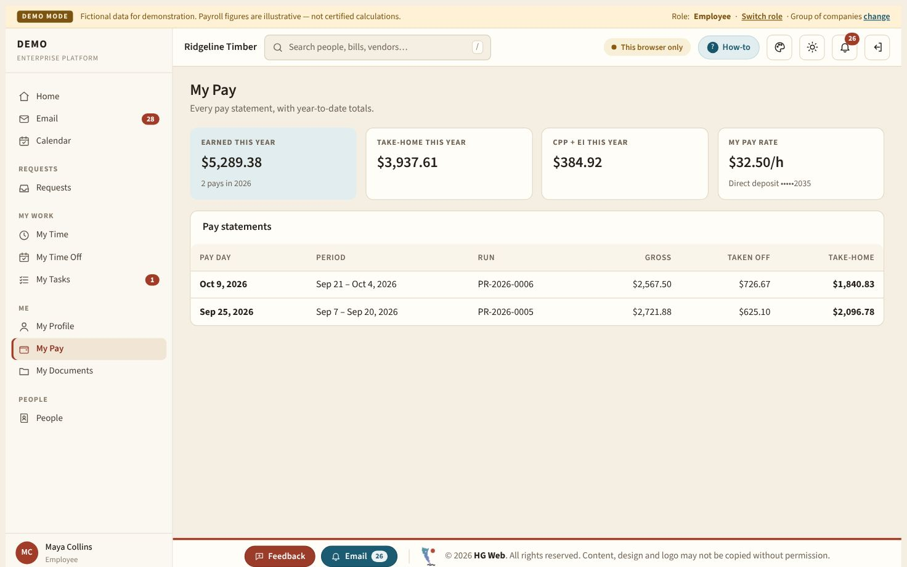
Maya's new pay statement.
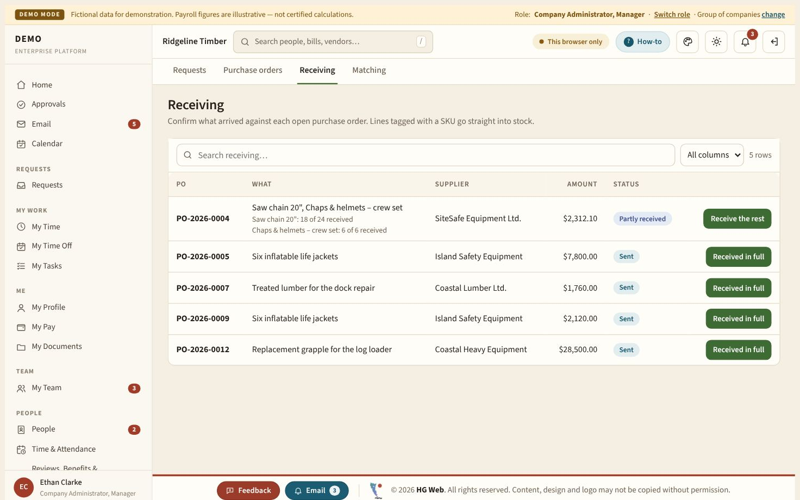
Ethan receives PO-2026-0012.
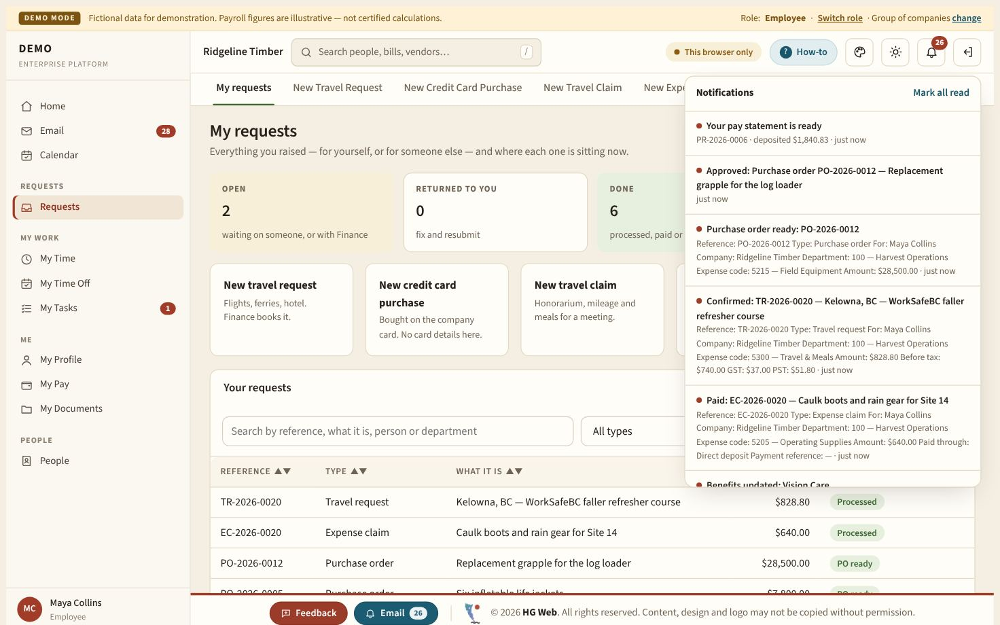
The notification trail.
Who can do what, the rules, the record of everything that just happened, and how the experience is shaped.
| # | Go to | Do | Say |
|---|---|---|---|
| 1 | Administration › Users & access | Every sign-in with roles and company scope; the roles table and what each role can do. | |
| 2 | Companies | The four companies and their details. | |
| 3 | Approval rules | Purchase orders › Director level: change 5000.01 to 10000 → Save. Try changing the approver, removing a step or adding one. | The next request follows the new rule immediately. |
| 4 | Audit log | Every action from this demo: who, what, when. Append-only. | Nothing can be edited or deleted here. |
| 5 | Feedback | Maya's note, with the page she was on → Mark done. | |
| 6 | Settings · Email templates | Data mode, and Reset the demo for everyone (shared link only). Email templates: the wording of every email the platform sends. | |
| 7 | Page & Experience | Rename a menu; add Leave balance to employees' Home; View as Maya with Edit mode; Review & publish → version 1; compare and restore. | Administrators shape what people see without a developer — and every version is kept. |
| 8 | How-to | Guides by role (Manager has “Upload a contract and see who can open it”) and What's new. |
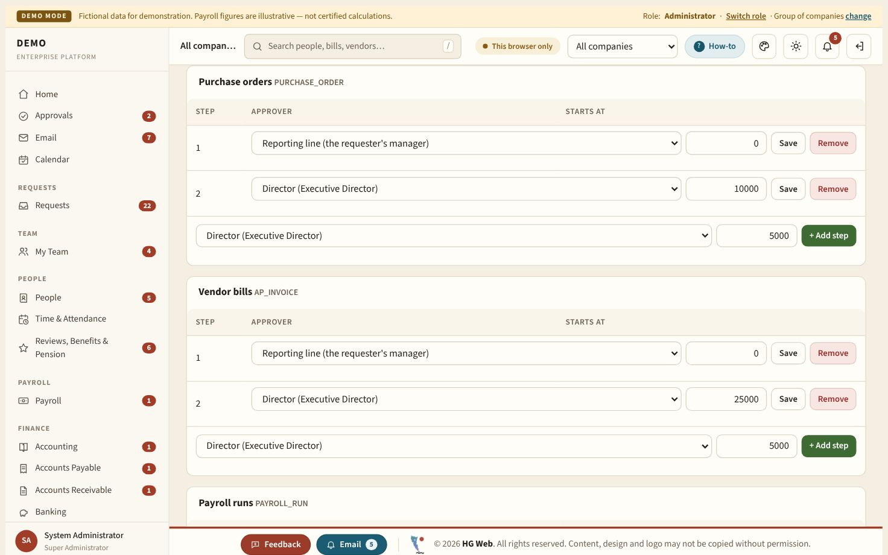
Approval rules: change the approver and amount, remove or add a step.
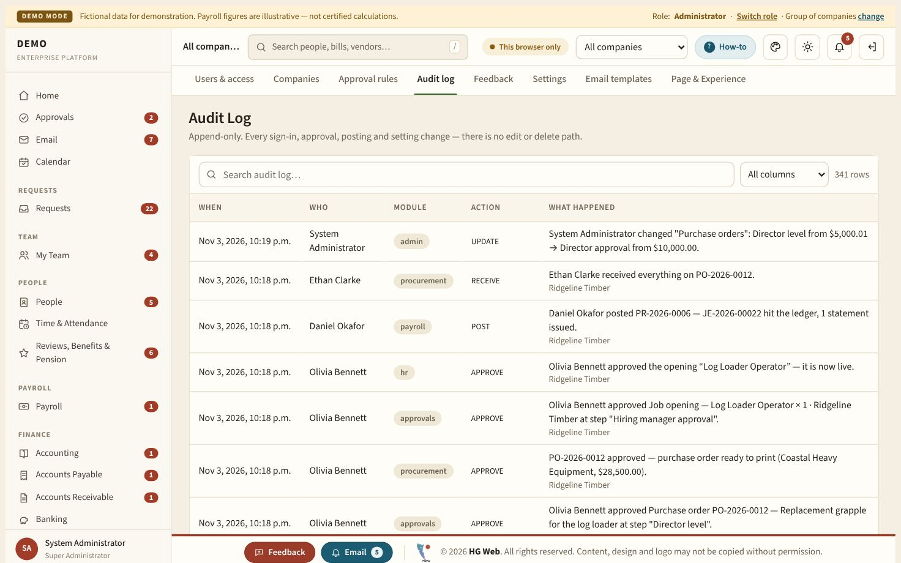
The audit log after the demo.
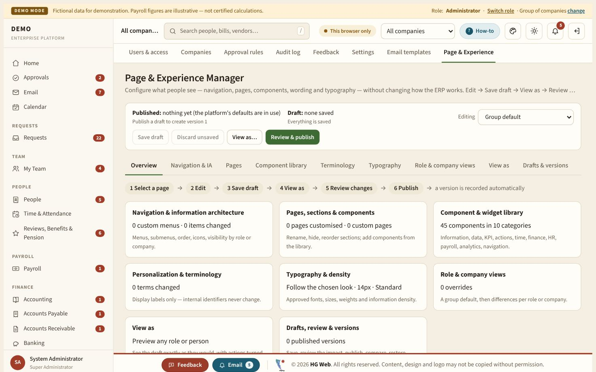
Page & Experience Manager.
Use this to check nothing is missed, or to answer “can it do …?” by jumping to the right act.
| Area | Functions shown | Act |
|---|---|---|
| Employee self-service | Home summary · timesheet with auto-filled stat/leave · time off with balance and calendar · travel, credit-card, travel-claim, expense-claim and purchase-order requests in one Requests menu · receipts and quotes attached · tasks · profile tabs · certificates with files and renewals · reviews · pay statements · documents · directory · org chart · search · looks and dark mode · feedback · notifications · email and calendar · how-to | 1, 6 |
| Manager | Home queue · approvals by kind · full timesheet review · approval popups with history · team tasks (board, list, timeline) · team time off, requests, claims · performance review · requests to hire · contracts upload, files, history · team history | 2 |
| HR | Employee records and pay changes · add employee · onboarding · hiring openings with approval · hiring requests from managers · departments · org-chart moves · time & attendance · reminders by pay period · leave balances · review cycles · certificate reminders · benefits enrolment · pension · end of employment · reports | 3 |
| Finance | Finance team approvals · finance queue: claims paid, trips booked, orders closed · bills with PDFs · batch entry · payment batches · vendors and files · 3-way match · AR invoices, payments, deposits · bank reconciliation and rules · journals · recurring entries · depreciation · budgets · month-end close · chart of accounts · inter-company · sales orders, shipments, stock, counts · projects · reports and downloads | 4, 6 |
| Payroll | Pay runs: open, calculate, send, director approval, post · statements · Records of Employment · CRA PD7A remittances · year-end · payroll settings · stat holidays | 4, 5, 6 |
| Purchasing | Purchase order request → manager, then director level by amount → numbered order sent to the supplier → receiving · every order under Finance › PO | 1, 2, 5, 6 |
| Executive / CEO | At a glance · final approvals (large purchases, payroll, hiring) · every contract · P&L, balance sheet, headcount · whole-group history | 5 |
| Administration | Users and roles · companies · approval thresholds · audit log · feedback · settings and reset · email templates · Page & Experience Manager · how-to guides | 7 |